들어가기교과서 236쪽
이전 단원 확인하기옳으면 O, 옳지 않으면 X
목성형 행성은 고리가 있고, 지구형 행성에 비해 위성 수가 많다.
이 단원을 배우면
· 태양의 활동이 지구에 미치는 영향을 설명할 수 있다.
생각 깨우기태양에 검은 점이 있다고?
태양의 표면에 있는 검은 점은 무엇일까?
태양의 표면에 있는 검은 점은 광구에서 관찰할 수 있는 흑점이다.
천체 망원경을 이용하여 태양 관측하기교과서 236쪽 · 해 보기
해 보기태양 투영판으로 태양 관측하기
준비물 | 천체 망원경, 태양 광선 차단판, 태양 투영판, 종이
- 맑은 날 태양이 잘 보이는 곳에 천체 망원경을 설치한다.
- 접안렌즈 쪽에 태양 광선 차단판과 종이를 고정한 태양 투영판을 설치한다.
- 경통의 방향을 조정하여 태양의 모습이 태양 투영판 가운데에 위치하게 한다.
- 태양의 모습이 태양 투영판에 선명하게 맺히도록 초점을 조절한다.
- 태양 투영판에 맺힌 태양의 모습을 그려 보고, 관측한 내용을 정리해 보자.
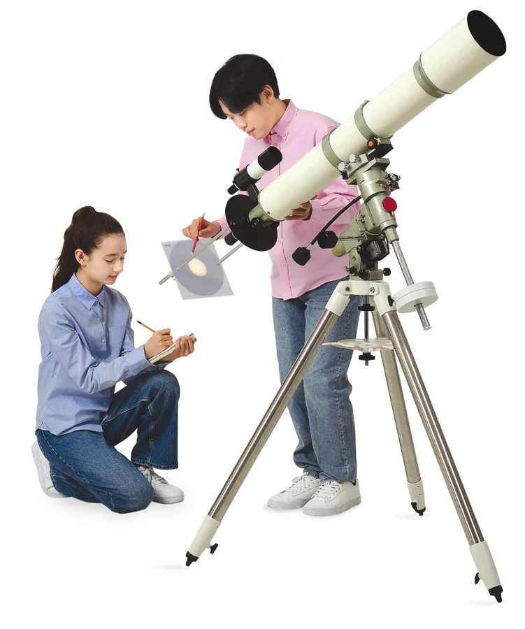
- 관측한 태양의 모습을 설명해 보자.
태양 투영판 위에 태양 표면이 밝게 보이고, 태양 표면의 검은 점들이 여러 개 보인다.
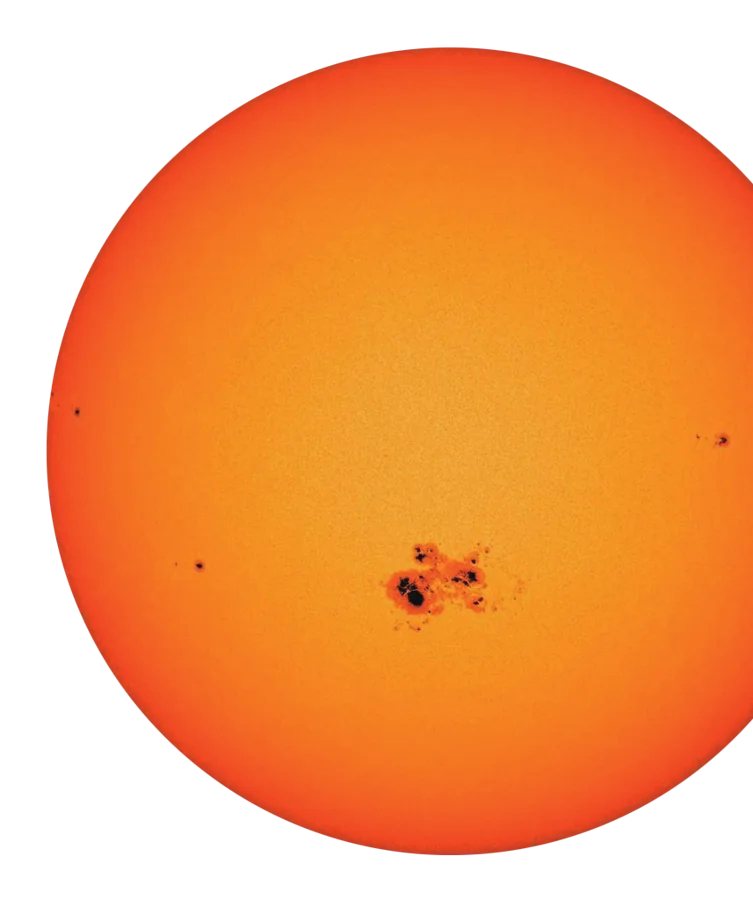
우주환경센터 누리집 → 분석·관측 → 실시간 관측 정보에서 오늘 태양의 모습을 확인할 수 있다.
태양의 표면과 대기교과서 237쪽 · 그림 Ⅶ-3, Ⅶ-4
태양 탐험이름을 눌러 살펴보자
태양의 표면
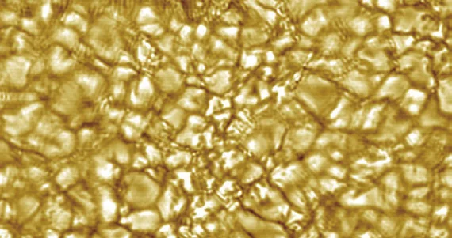
쌀알 무늬광구에 쌀알을 뿌려 놓은 것처럼 보이는 무늬로, 광구 아래에서 일어나는 대류 현상 때문에 생성된다.
광구에 나타나는 어두운 무늬로, 주변보다 온도가 낮아 어둡게 보인다. 흑점의 수명, 크기, 모양은 다양하며 흑점의 수는 약 11년을 주기로 변한다.
흑점은 실제로 검은 것이 아니라 주변보다 온도가 낮아서 상대적으로 어둡게 보이는 것이다.
태양의 대기
태양의 대기는 광구 위에 넓게 퍼져 있다. 광구 바로 위 붉은색의 얇은 대기층을 채층이라 하고, 채층 위로 멀리 뻗어 있는 백색의 대기층을 코로나라고 한다.
태양의 대기는 광구에 비해 어둡기 때문에 평소에는 볼 수 없고, 달이 태양의 광구를 완전히 가릴 때 관찰할 수 있다.
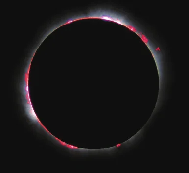
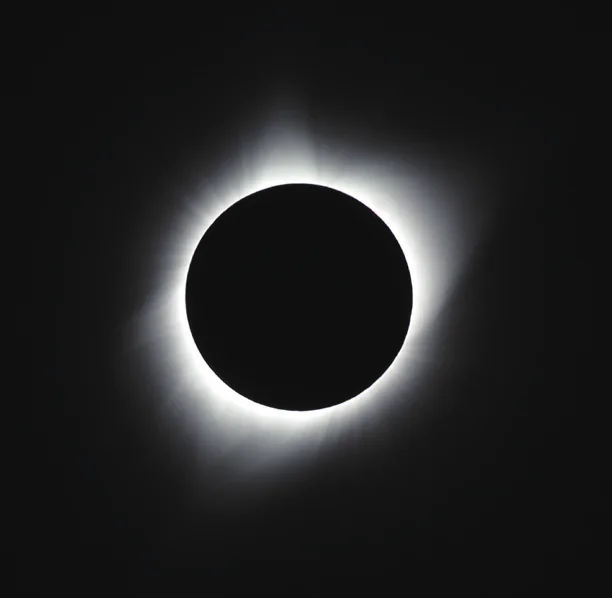
태양의 대기에서는 홍염이나 플레어가 나타나기도 한다. 홍염은 광구나 채층의 물질이 불꽃처럼 코로나까지 뻗어 나가는 현상으로, 고리 모양으로 나타나기도 한다. 플레어는 흑점 부근에서 일어나는 강력한 폭발 현상이다. 플레어가 발생하면 많은 물질과 에너지가 우주 공간으로 방출된다.
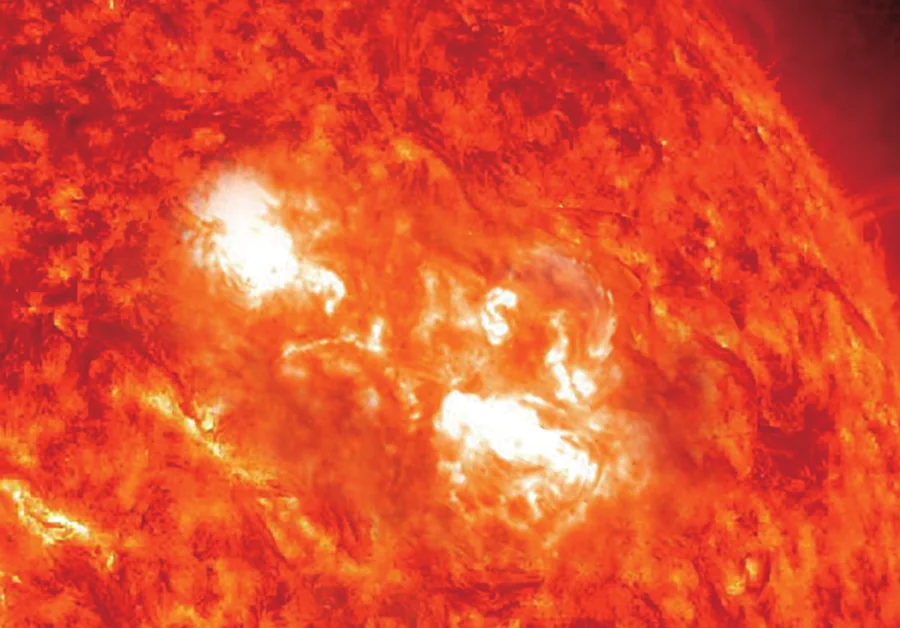
태양풍과 태양의 활동교과서 238쪽
태양풍
태양의 활동이 활발한 시기에 태양에 나타나는 현상
- 흑점의 수가 많아진다.
- 홍염과 플레어가 자주 발생한다.
- 코로나의 크기가 커진다.
- 태양풍이 더욱 강해진다.
태양 활동을 바꿔 보자
그림에서 태양과 지구의 크기와 거리는 실제 비율과 다르다. 활동이 활발해지면 아래 지구에 미치는 영향 카드에 불이 켜진다.
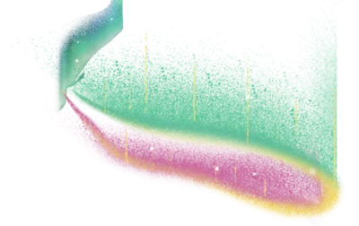
오로라 증가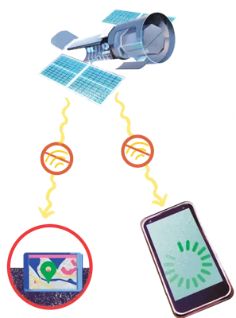
무선 통신 오류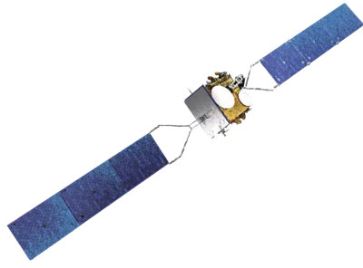
인공위성 고장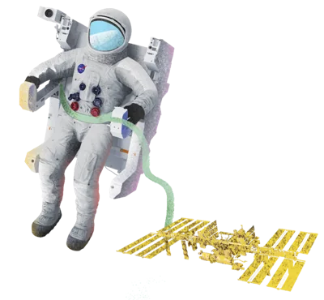
우주인 방사선 노출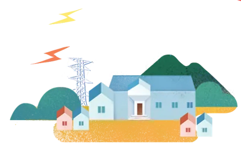
송전 시설 고장·정전태양의 활동이 지구에 미치는 영향교과서 238~239쪽
해 보기디지털태양의 활동이 지구에 미치는 영향 추론하기
준비물 | 스마트 기기, 참고 도서
- 태양의 활동으로 지구에 나타나는 현상에 대한 자료를 수집해 보자.
- 수집한 자료를 분석하고 정리하여 태양의 활동으로 지구에 나타나는 현상들을 친구들에게 공유해 보자.
태양 흑점 부근에서 일어난 강력한 폭발로 통신 오류가 예상되자, 북극 지방을 거쳐 국내로 들어오는 항공기들이 북극 지방을 우회하여 운항함으로써 비행 시간이 평균 1시간 20분씩 길어졌다. (출처: 조선비즈, 2012.)
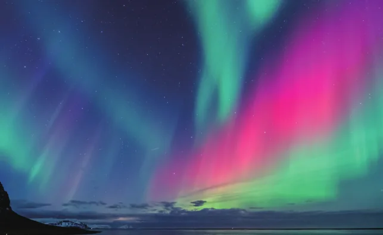
태양풍이 공기 입자와 충돌하면서 빛을 내는 오로라가 발생한다.
- 친구들이 공유한 내용을 바탕으로 하여 태양의 활동이 지구에 미치는 영향을 추론해 보자.
인공위성이 고장 날 수 있다. 대규모 정전이 발생할 수 있다. 오로라가 더 넓은 지역에 자주 발생한다. 무선 통신이 끊기거나 통신 오류가 발생할 수 있다.
태양의 활동이 활발해질 때 지구에 미치는 영향 그림 Ⅶ-5
| 고위도 지역에서는 오로라가 더 넓게 자주 발생한다. | |
| 무선 통신이 끊기거나 오류가 발생할 수 있다. | |
| 인공위성이 고장 날 수 있다. | |
| 송전 시설이 고장 나 정전이 발생할 수 있다. | |
| 북극 지방 하늘을 비행하기 어려워지고, 승무원과 승객이 태양 방사선에 노출될 수 있다. | |
| 우주인이 더 많은 태양 방사선에 노출될 수 있다. |
확인하고 정리하기교과서 239쪽
스스로 확인하기
- 1광구 바로 위 붉은색의 얇은 대기층을 코로나라고 한다. ( ○, ✕ ) → ✕ 광구 바로 위 붉은색의 얇은 대기층은 채층이다.
- 2태양에서 방출되는 입자의 흐름을 태양풍(이)라고 한다.
- 3탐구 능력 | 흑점 수가 적을 때에 비해 흑점 수가 많을 때에는 코로나의 크기가 어떻게 변하는지 설명해 보자.
흑점 수가 많을 때는 흑점 수가 적을 때에 비하여 코로나의 크기가 커진다.
추가 확인 문제태양의 표면과 대기에서 볼 수 있는 현상을 구분해 보자.
보기: ㉠ 홍염 ㉡ 흑점 ㉢ 쌀알 무늬 ㉣ 코로나 ㉤ 플레어
㉡ 흑점 ㉢ 쌀알 무늬
㉠ 홍염 ㉣ 코로나 ㉤ 플레어
O / X 확인문장이 옳으면 O, 옳지 않으면 X
① 흑점은 주변보다 온도가 낮다. ③ 태양의 대기는 달이 광구를 완전히 가릴 때 관찰할 수 있다.
배운 내용 정리하기 · 태양
쌀알 무늬 : 대류 때문에 생긴 무늬
흑점 : 온도가 낮아 어둡게 보이는 무늬
채층 : 광구 바로 위 붉은색 얇은 층
코로나 : 채층 위 백색의 대기층
홍염, 플레어
다음 시간에는
‘1. 태양계 구성 천체와 태양의 활동’ 중단원을 정리해 보자. (교과서 240~241쪽)